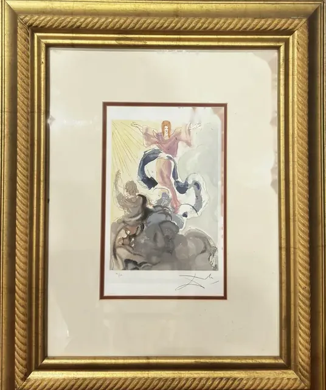
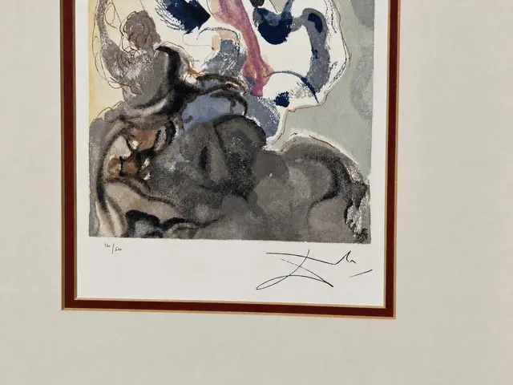
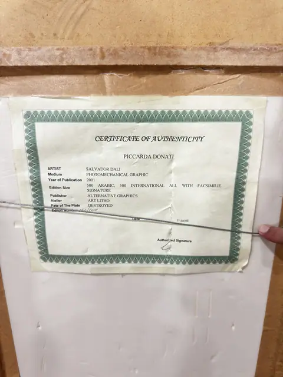
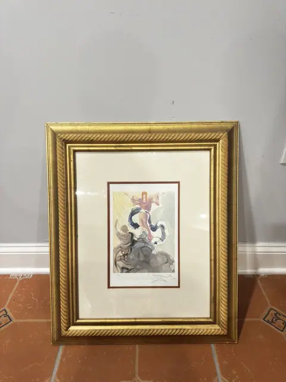
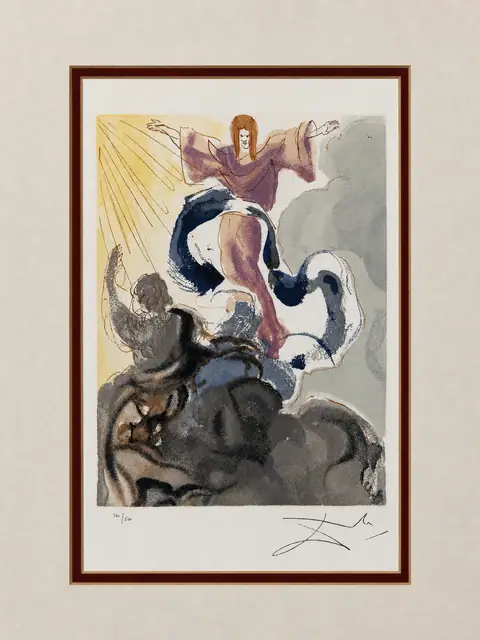
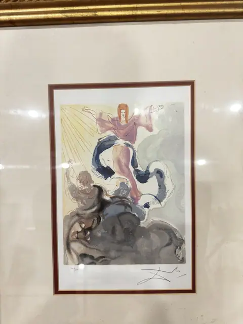
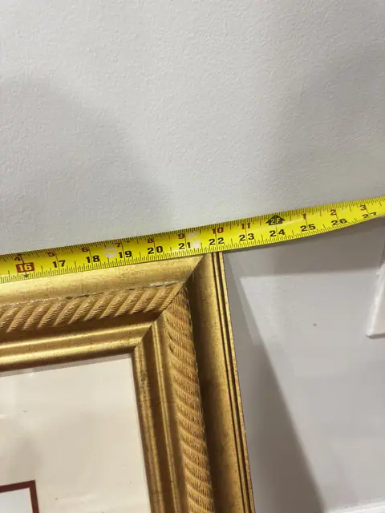
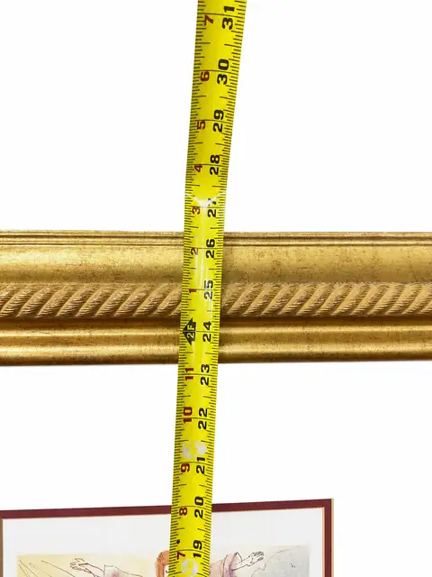
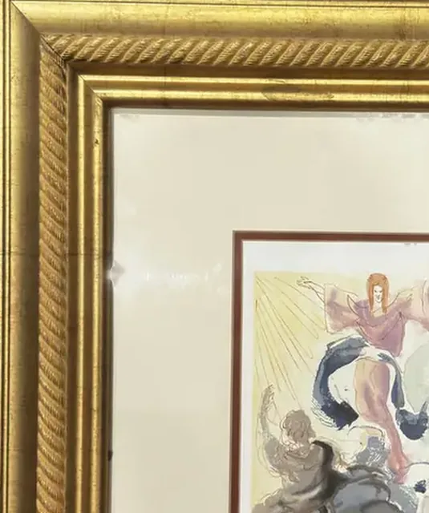

Paintings & Prints
Salvador Dalí 'Piccarda Donati' Signed Print with Certificate of Authenticity
Salvador Dali
Price Upon Request











About the Item
SALVADOR DALI (Spanish, 1904-1989) 'Piccarda Donati'. Print in colours, pencil signed lower right with edition notation lower left. Certificate of authenticity affixed to the reverse. Presented with a burgundy fillet mat in a gilt rope-twist frame under glass.
About the Artist
Salvador Dali (1904-1989) was the Spanish Surrealist whose dream imagery made him one of the most recognisable artists of the twentieth century. Alongside his paintings he produced extensive suites of etchings and lithographs, including literary illustrations such as Don Quixote.
Details
- Creator:
- Salvador Dali
- Dimensions:
- Height: 26.5 in (67.31 cm)
Width: 22.25 in (56.52 cm)
outside of frame - Period:
- 20Th
- Condition:
- Offered in the condition shown in the photographs.
- Reference Number:
- VO-48
- Documentation:
- Certificate of Authenticity